A half-square-mile community on borrowed ground.
Tucked along the California coast just west of Santa Barbara is Isla Vista: a half square mile of dense student housing that exists almost entirely because of UC Santa Barbara. Nearly all of its 27,000 residents are college students; it's the place they sleep, study, throw parties, and watch the sun set over the Pacific.
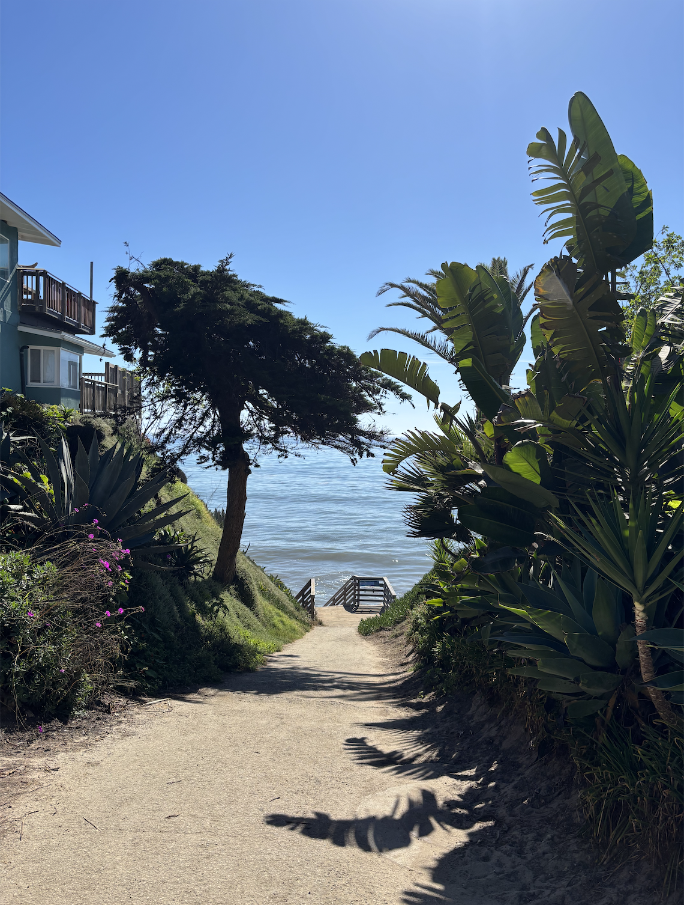
The street closest to the water is Del Playa Drive (DP). Half of the homes on its ocean side sit directly on top of coastal bluffs, with decks and backyards sitting right at the edge with a 30 ft drop down to the beach below. It is one of the most sought-after addresses in Isla Vista and a unique piece of real estate in California. The ground it sits on is disappearing, and has been for a long time.
Natalie has lived at 6507 Del Playa since July. She is a third-year student studying political science and history, and she chose her place for the same reason everyone does: the view. On a clear morning, you can see the Channel Islands from her deck. The Pacific stretches out beneath a sky that looks almost too blue to be real.
She also knows the cliff under that deck is slowly eroding.
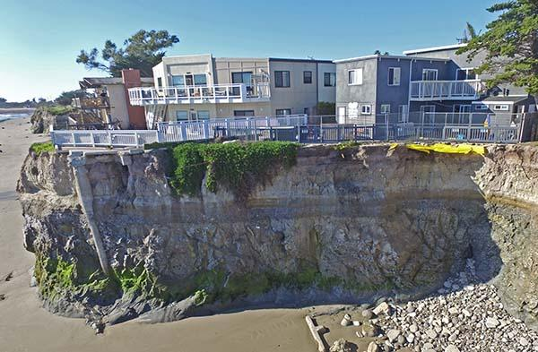
"The thought of the cliff thinning out each year leaves me more uneasy."
— Natalie, third-year UCSB student
She has not seen a collapse. She has not watched her fence fall or her foundation crack. But she noticed the staircase down the street that had been closed off. She noticed when her landlord replaced the fence without saying a word.
What she is picking up on, even without knowing the geology behind it, is something researchers have been tracking for decades: Del Playa is falling into the ocean. While Isla Vista sees sunny skies most of the year, seasonal shifts bring heavy weather to the residents of Del Playa.
Editor Note
Original text appears to have a formatting gap: "seasonal shifts bring heavy [missing word] the residents of Del Playa." This may need manual review for a missing word (e.g., "rain to" or "weather to").
Built on the cliffs of Isla Vista, coastal erosion has been an issue on Del Playa for a long time. Accounts of residents experiencing severe coastal erosion were first mentioned after intense rain events in 1978. Similar events followed in 1982, 1997, and 2015. Some years were worse than others, but they all had one thing in common. These years experienced the climate phenomenon known as an El Niño.
El Niño years, when global climate drivers shift, leading to more frequent and intense weather events. Happening every two to seven years, El Niños have been known to cause major shifts in local weather patterns around the world. In Southern California, this leads to an extended Equatorial Pacific Jet Stream and, in turn, an amplified storm track. Overall, this means Isla Vista experiences a warmer and wetter Summer and Fall with increased flooding.
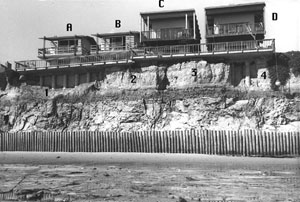
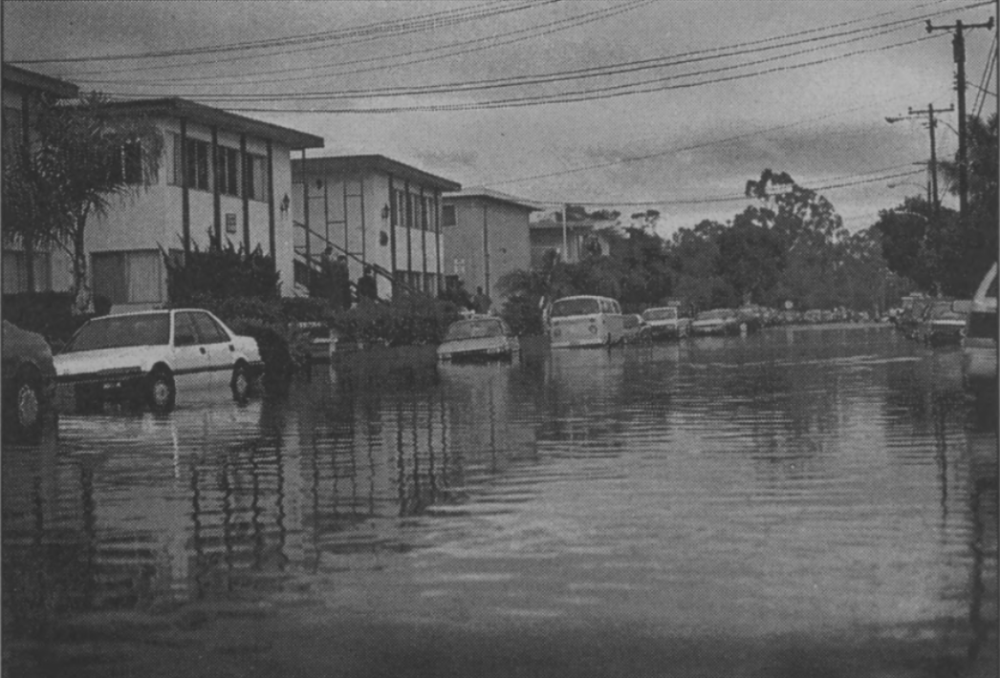
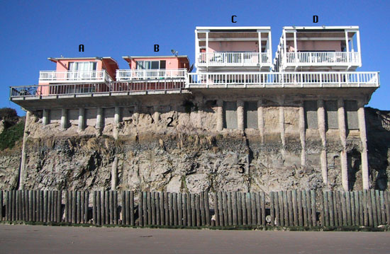
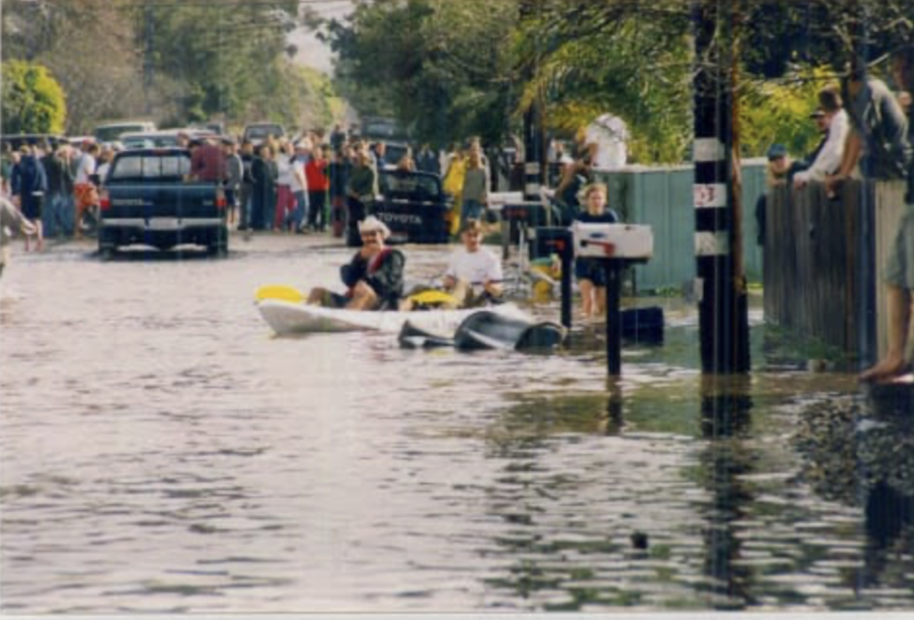
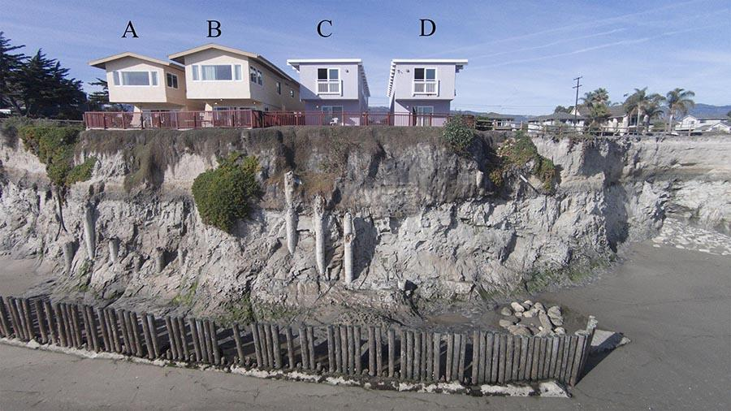
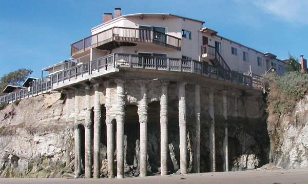
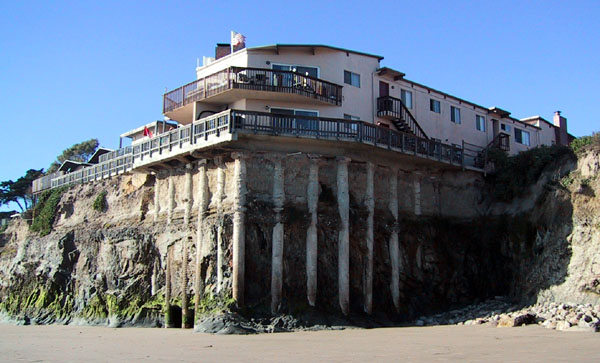
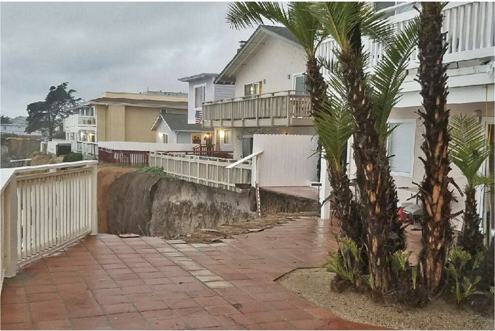
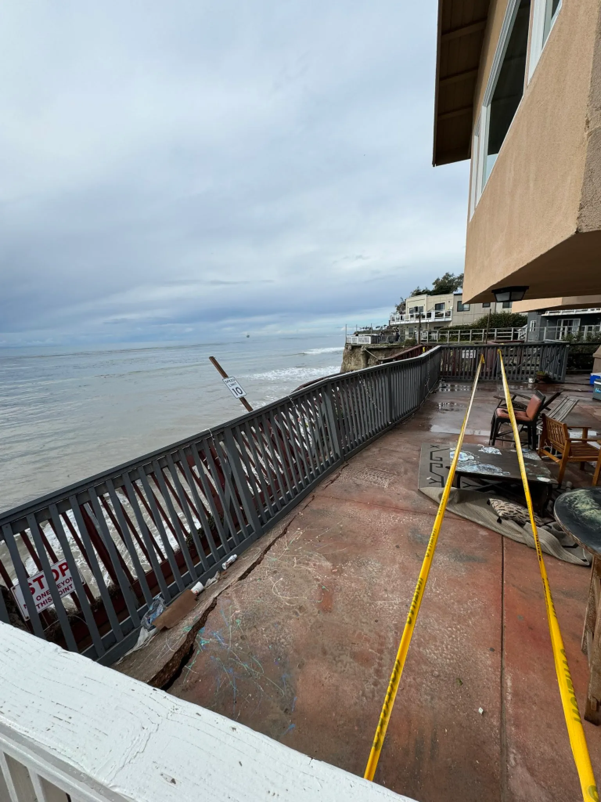
With Isla Vista's already unstable oceanfront real estate, an El Nino event has never been good news for residents and property managers. The years 1997 and 2015 both proved this with historical El Nino's that reshaped coastlines along California. To make matters worse, scientists are predicting a higher and higher likelihood of this year potentially being another historical season.
What could go wrong? Let's look back.
During the El Nino's over the years, a combination of rain, flooding and wave energy led to significant damage to the cliffs and coastal infrastructure along Del Playa. As houses slipped into the sea, this sparked efforts to assess the area to stave off the unstoppable forces of coastal erosion. Homes were moved back or condemned, seashore management plans were proposed and even illegally constructed, drainage systems were improved, all to little or no success. Four decades later, things haven't gotten much better.
El Niño events reveal the danger, but they do not fully explain why Del Playa is so vulnerable. What is happening inside the cliffs themselves?
The Cliffs of Isla Vista were analyzed by geologists after a particularly intense El Niño season in 1982. They found that the contents of the cliffs were rather unstable, consisting mostly of marine alluvium (sand and mud) deposits overlying shale. Their findings also noted that the surface and subsurface soil is not well equipped for proper drainage, leading to seepage and slippage. This contributes to coastal retreat, a complex and unstoppable process of weathering and erosion in coastal areas. Paved and controlled watersheds, such as those around the Bradbury Dam, made matters worse by reducing the amount of sediment that reaches beaches, a natural barrier for the cliffs against the ocean. Heavy rains, waves, and flooding from El Niño only make matters worse for the houses built on these unstable cliffs.
Coastal erosion in Isla Vista is driven by a simple but powerful chain of events: weather increases ocean energy and groundwater recharge, and both reduce cliff stability.
In Isla Vista, that matters because the bluffs are not solid rock. They are relatively weak coastal deposits, including sands, silts, and older marine sediments. The Isla Vista cliffs are composed of a top layer of sand over highly fractured shale — materials that waves can easily crack (SB Independent, 2017). These materials can stand for long periods when dry and supported, but they are highly sensitive to saturation and toe erosion, meaning erosion at the base of the cliff.
And those bluffs no longer have their natural protection. According to UCSB geology professor emeritus Art Sylvester, waves now attack the bluffs directly — especially during big storms and very high tides — because the sand that once replenished the beach is now trapped behind Bradbury Dam (SB Independent, 2017).
Without that buffer, storms do serious damage, because they do two things at once. They raise wave energy offshore, and they bring rainfall onshore. Strong winds build larger waves, and those waves travel farther up the beach and strike the cliff base with more force. At the same time, rain infiltrates the bluff, adding weight and reducing the internal friction that helps sediment hold together.
Geologists often describe cliff failure as a balance between resisting forces and driving forces. The resisting side includes the strength of the sediment and the support of dry ground. The driving side includes gravity, wave undercutting, and water pressure inside the bluff. Weather pushes hard on all three.
Editor Note (original DOCX)
Once the toe is removed, the upper bluff becomes oversteepened and more likely to collapse. A coastal engineer would put it plainly: the cliff does not usually fail all at once because of one factor. It fails because the weather keeps stacking stress on the same vulnerable edge.
Research published in Nature Communications found that even historically stable rock coasts are "highly sensitive to sea-level rise," with cliff retreat rates potentially increasing by up to an order of magnitude by 2100 (Shadrick et al., 2022).
Data
According to property line surveys from 1965 and 1984, the bluffs retreat at an average rate of six inches per year, but the actual rate varies between two and 14 inches per year and is "episodic" — meaning sections can collapse all at once after years of stability.
So what's in store for the 2026/2027 El Nino Season? At the moment the world is on edge. Most forecast groups, including NOAA, are calling for a rapidly developing El Nino to form by July with a 25% likelihood of it being on the level of what was experienced in 1997 and 2015. However, this does not guarantee that we see weather events on the biblical scale.
One of the best ways to understand what is actually happening on Del Playa is to look at a single address over time.
At 6757 Del Playa, the building known informally as the Pillar House because of the concrete caissons visible from the beach below, former UCSB geology professor Art Sylvester photographed the same stretch of cliff from roughly the same spot every few years starting in 2002. What those photos show is a building losing its ground.
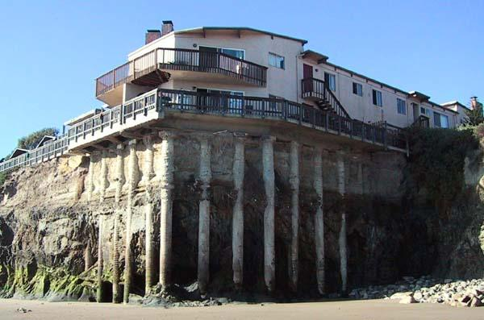
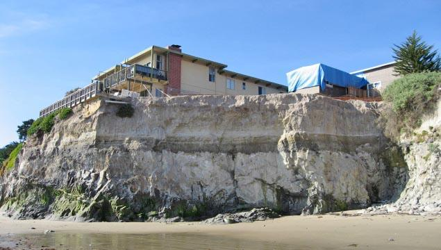
In the early 2000s, the caissons sat embedded in the cliff face. The building behind them was intact. By 2005, the cliff had already started pulling back, and you could see the pillars holding up the house with no cliff underneath. By 2007, the owner made a decision: cut the building back, remove the pillars, and accept the loss. A blue tarp marks where the work is happening.
But cutting back one building does not stop the cliff from retreating. By 2012, noticeable erosion had begun beneath the yellow house next door. The cliff has reached it.
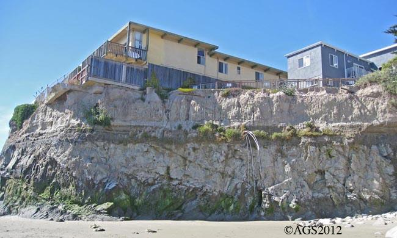
Then came the winter of 2017.
A storm dropped about five inches of rain in a single weekend in February. Engineers inspecting the property found the building was less than five feet from the cliff edge. The county red-tagged two ocean-side bedrooms, technically requiring three tenants to leave. But when property manager Chris Mercier held a meeting with all 21 residents at the Pardall Center, every single one of them decided to go.
"I think so long as there's some or any degree of concern for the structural instability of any part of the unit, our safety is still put in jeopardy to some degree."
— Luciano Thomas, second-year art major
Mercier confirmed the building had lost about three feet of cliff in that one storm. It had been sitting eight and a half feet from the edge. After one Friday of rain, it was at five and a half.
For the students trying to find new housing in the middle of winter quarter, the timing was brutal. Reed Zabel, a second-year political science major, described trying to relocate a ten-person house on short notice in a town with almost no vacancies.
"With the vacancy rate in the area, it's really hard to find anything to accommodate all 10 people or even just find a place that's reasonably close to campus. The only options that are open are things that people have passed up, obviously."
— Reed Zabel, second-year political science major
The lawyer from the Isla Vista Tenants Union who was at that meeting put the situation plainly. Because California had been in a drought for years, she explained, students had been able to live without facing dramatic erosion. It was "a roll of the dice," she said.
Nothing collapsed. Nobody was hurt. The cliff just crept close enough in one weekend that 21 people had to leave.
Back in Sylvester's archive, the January 2017 photos show the yellow house has now been cut back from the edge too, with a balcony built on the space where the building used to extend. A concrete piling is visible in the cliff face, exposed by years of continued erosion.
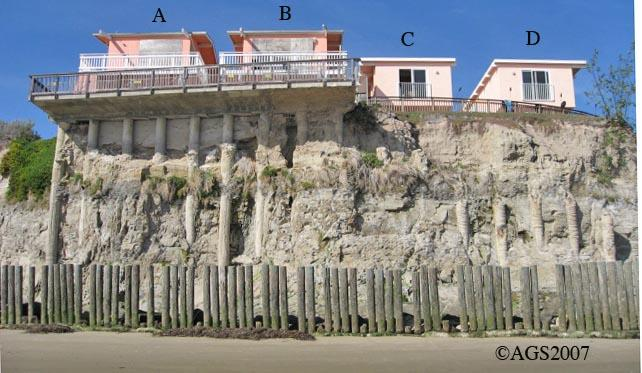
Two years later, in April 2019, a 20-foot concrete caisson collapsed onto the beach below the adjacent property at 6761 (the yellow house). The building itself had already been reconfigured years earlier, but the old caissons from the original foundation were still standing, detached and freestanding after the patio above them was removed.
Nobody was hurt, but the beam had to be broken into pieces and hauled off the beach in a wheelbarrow.
The work of managing erosion does not end when a building gets cut back. The infrastructure left behind keeps breaking down and falling. One building's solution becomes the next building's hazard.
January 22, 2017
On a Sunday afternoon during a heavy storm, a section of bluff at 6653 Del Playa collapsed into the ocean. Part of the building's communal backyard went with it. Nobody was hurt, but four of the nine units at the property, known as The Oasis, had to be evacuated. Leaving twenty-eight students displaced.
Residents said it sounded like a massive earthquake.
What made this event more than just a scary moment was what it revealed about the county's monitoring system. Officials had flagged the eastern side of the building because the bluff was within 10 feet of the foundation. But the collapse happened on the western side, where the bluff was considered safe.
Since the monitoring program started in 2004, the county has ordered cutbacks at 15 buildings. At least 30 buildings on Del Playa have been cut back over recent decades. Each cutback reduces the footprint of a building, which means fewer units, which means less housing in a town that is already severely short on it.
February 2024
Seven years after The Oasis, it happened again. A deck at 6745 Del Playa collapsed on February 6, 2024. The building had been thought to be 18 to 19 feet from the cliff edge. Four surrounding buildings were evacuated after this collapse.
A local official called it a wake-up call and said there needs to be a reevaluation of cliff policies given how much climate change has shifted things.
After the 2024 collapse, reporters found that about five properties within 10 feet of the cliff had not been required to vacate, because of exceptions granted for deepened foundations. The county also could not provide geotechnical reports for roughly a dozen inhabited properties within 20 feet of the edge. The structural safety of those buildings, relative to what is happening to the ground beneath them, is not documented.
In 1963, Santa Barbara County passed an emergency setback ordinance that required properties on Del Playa (D.P.) to set back 30 feet from the cliffs. However, over the years, erosion has caused much of that land to disappear. While many property owners agreed with the ordinance, others ignored it & did not fully understand why it was necessary. On average, about six inches of land were lost each year, eventually causing the original 30-foot setback to vanish. A man named Gurrola inspected several properties along Del Playa & noticed that sea caves were slowly forming underneath parts of the cliffs. Over time, these caves weakened the lands & made the cliffs extremely unstable. Since then, more than 30 properties have had to be moved farther back in order to prevent them from collapsing near the cliff's edge.
In a 1978 community newsletter, the Coastal Commission, along with the Isla Vista Planning Commission, Community Council, & Park District, held a hearing in San Luis Obispo regarding the proposed Del Playa seawall. The proposal included a 5-10 foot rock revetment along the base of these bluffs, stretching from 6741 Del Playa to County Park. The seawall would have been about 10-12 feet high & extend approximately 20 feet from the bluff. However, many commission members opposed the proposal because they believed that a "seawall was unnecessary, as bluff top drainage improvements would prevent the major cause of erosion." They also believed that protecting affordable housing was more important than limiting public access to the ocean. Another concern was that approving the project could lead to cuts in county services such as police, fire, planning, & administration. After the proposal was rejected, people continued searching for other ways to reduce erosion & improve safety. Even so, parts of the Del Playa cliffs continued to collapse over time. In 1992, the county built a timber seawall along several houses on Del Playa to help protect parts of the bluffs. By 1993, the pylons used to stabilize the bluff had become visible from the beach. Six years later, in 1998, the California Coastal Commission declared the seawall "non-compliant," stating that it "caused increased erosion farther down the coast because of the altered bluff conditions."
For years, people have fallen from the I.V cliffs, and many have either lost their lives or suffered serious injuries. In 2023, the Santa Barbara County Board of Supervisors approved an eight-point safety plan that required properties along the cliffs to install six-foot fences to help keep people away from the edge. This plan was created after a 19-year-old SBCC student died after falling from the cliffs. Even after the safety plan was approved, many private property owners ignored the requirement & did not install the fences. Over the past 30 years, about 14 people have died from falling off the I.V cliffs.
As a college student, I find that many people do not really think about the dangers of living near the cliffs, especially incoming students who may not know about past accidents. When students move into houses overlooking the beach, most are more focused on the excitement of living in a "beach house" & experiencing the college lifestyle. Many students also do not take the time to fully read their leases because they see it as too much work or assume nothing will happen. Overall, students in Santa Barbara County need to be more aware of the risks of living near unstable cliffs, especially since erosion & accidents can occur unexpectedly.
Natalie's building is not the closest one to the edge. Her unit faces the parking lot. There is a fence. She says the distance feels okay.
But she also describes landlords who redo fences and roofs without telling anyone, power outages with no warning or explanation, maintenance requests that go nowhere. When she and her neighbors raise concerns, she says, nothing really changes.
"I feel like our lives aren't exactly considered based on how little they tell us about certain things."
— Natalie
That is not just a frustration with one landlord. It is a description of how Isla Vista has worked for decades. Students cycle through every year. Landlords manage dozens of buildings and respond when the county makes them. The county monitors the bluffs annually and after big storms, but both of the major recent collapses happened in spots that had been considered lower risk.
What Natalie actually wants to know is pretty simple. She wants to understand what is happening under her feet.
"I would definitely ask what the cliffs are projected to look like in the next ten years. At what rate are they eroding? How much is shaved off each year?"
— Natalie
UCSB geology professor Art Sylvester spent more than 40 years measuring the bluffs. At Campus Beach, just east of DP, he recorded an average retreat of five inches per year. At that rate, the bluff edge is about 35 years away from reaching Lagoon Road, one of the main roads through campus. Currently the path next to Lagoon Road is fenced off due to the rapid cliff erosion.
His advice to property owners is blunt. Cut the building back or move it closer to the street. Either way, you are just buying time.
The situation is driven by three things happening at once: erosion that has been accelerating since Bradbury Dam cut off the sand supply, El Nino cycles that turn gradual retreat into sudden collapse, and sea level rise that is pushing more wave energy into cliffs that are already weakened. Scientists expect those pressures to get worse.
DP is not going anywhere in the next few years. Students will still live there, still have parties there, still watch the sunset from those decks. But the question of how long that lasts, and what happens to Isla Vista's already strained housing supply when those buildings start getting red-tagged, is one that nobody has a clean answer to yet.
The cliff is still there for now.
"I love living on DP because of how beautiful it is to be by the water. But it is also pretty scary, considering how the cliffs could disappear anytime in the future."
— Natalie
She pauses.
"There are definitely ups and downs."